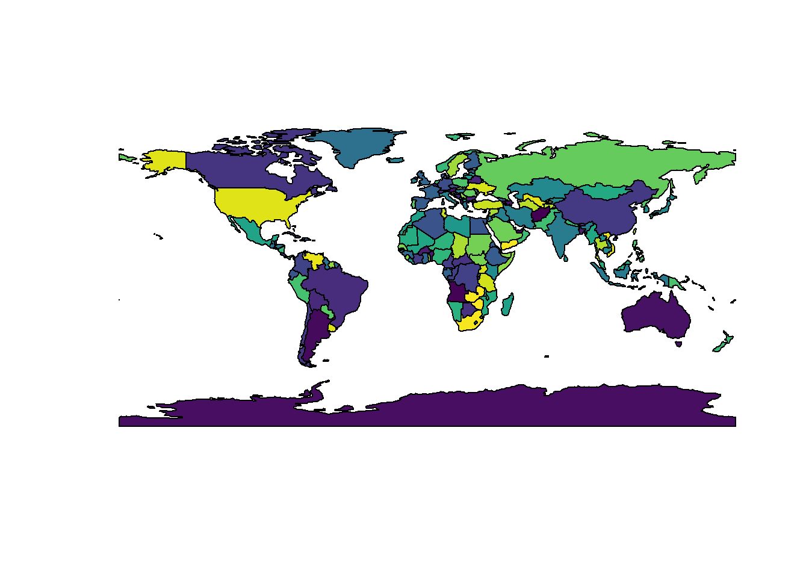
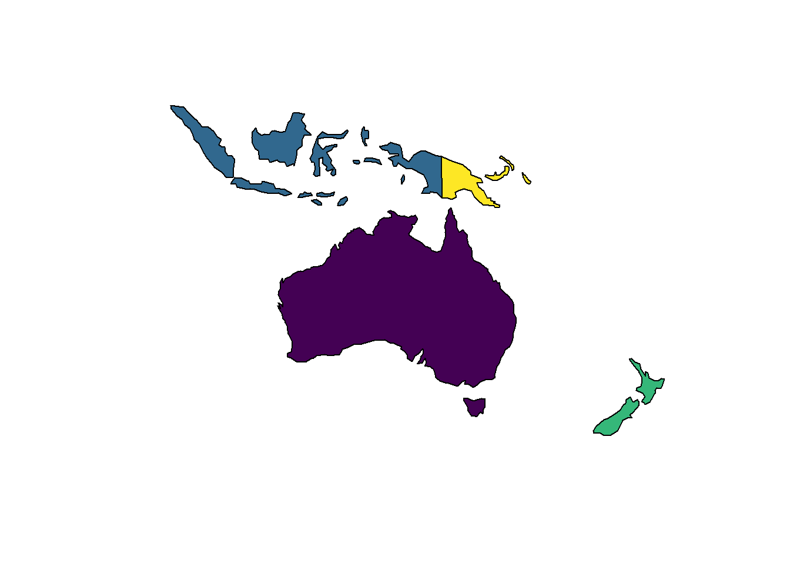
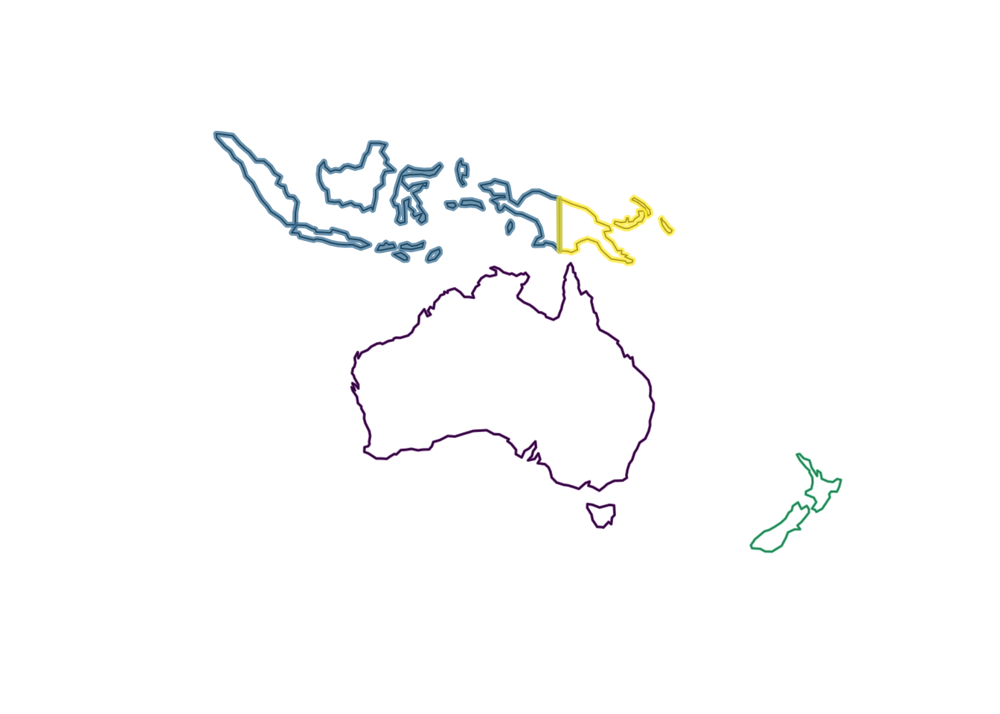
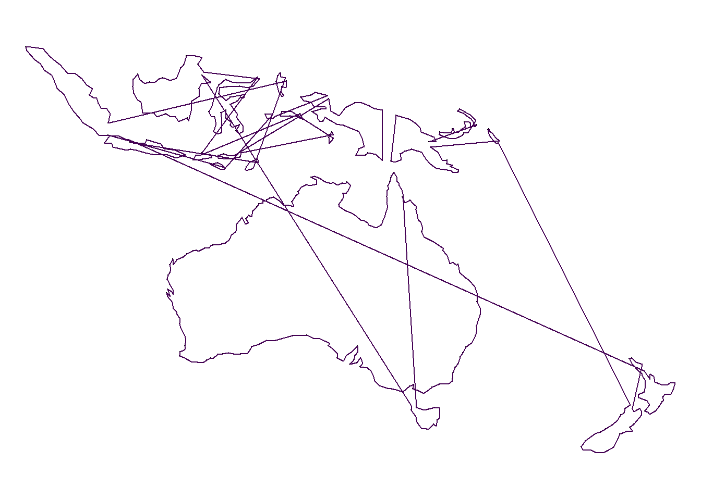
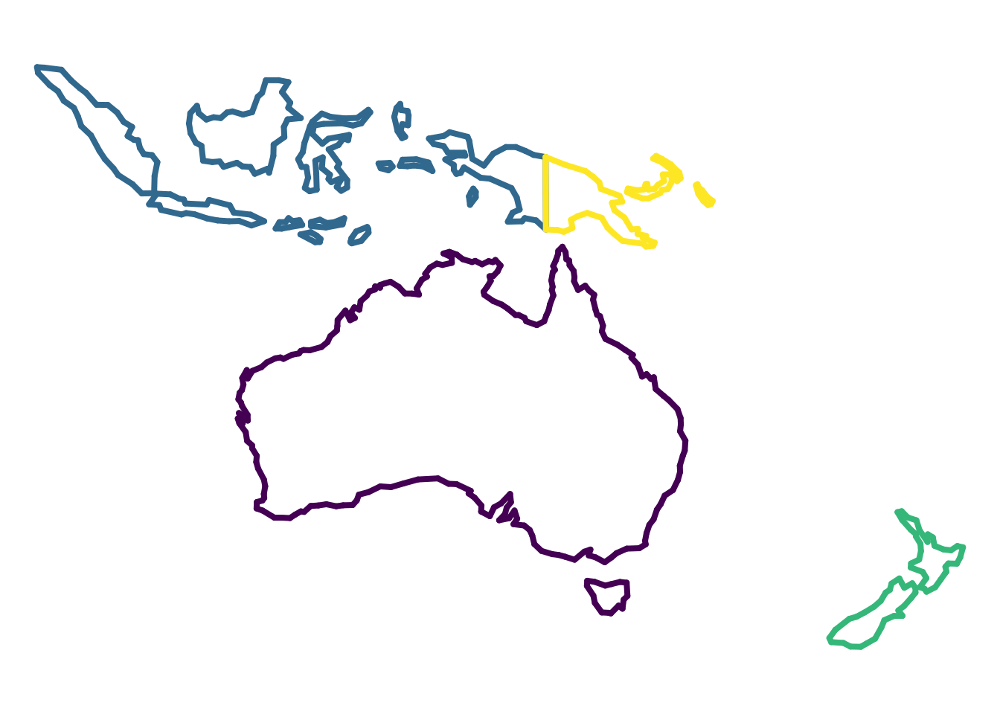
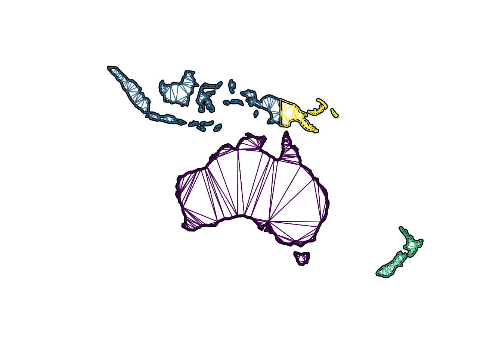

Terminology note: an early version of this document used the term branch to refer to what is now called a path, where a path is a linked sequence of coordinates. Technically a path can be composed of a single vertex, which is partly why a different term was used originally. There are some abbreviations “b” and “bXv” below that still refer to this old usage, they stand for “path” and “paths-link-vertex” respectively.
In this document I describe a “normal-form” that provides a very general way of extending the traditional GIS forms, and is a bridge between vector and raster rather than being a different form altogether. The purpose of this document is to advocate for this general form of data organization that can be used for new extended uses of GIS. I’m not arguing that this be used in place of other optimized forms, although it can be: I am interested in operations that simply cannot be performed already.
When we talk about vector data in geo-spatial, we have at least three levels of hierarchy to consider in the data structures.
GIS tools typically only provides direct access to the objects, though the relations between paths and coordinates can sometimes be seen.
We generally cannot store information against the paths or the coordinates, beyond what they inherently are defined by. For coordinates this is the X and Y values, and/or the longitude and latitudes, but simple features does provide the ability to store a “third” coordinate “Z” and or a measure coordinate “M”. M is typically used for “linear referencing”, and not a more general multidimensional geometry (like time).
I’ll use the countries example from a GeoPackage file provided here. I use R because I can tell the complete story with it, in a concrete and reproducible way.
Read in a polygon vector layer in traditional GIS form, and plot it.
#library(rworldmap)
#data(countriesLow)
#p <- countriesLow
library(rgdal)
p <- readOGR(system.file("extdata", "small_world.gpkg", package = "anglr"), "ne_110m_admin_0_countries")## OGR data source with driver: GPKG
## Source: "/perm_storage/home/mdsumner/R/x86_64-pc-linux-gnu-library/3.4/anglr/extdata/small_world.gpkg", layer: "ne_110m_admin_0_countries"
## with 177 features
## It has 1 fields
This object p presents a “data frame” (i.e. a table) front-end that we can query and use at the objects level, much like in some GIS software we can easily select a single object or row in a table.
library(spbabel)
pnganz <- subset(p, name %in% c("Australia", "Indonesia", "New Zealand", "Papua
New Guinea"))
pnganz## class : SpatialPolygonsDataFrame
## features : 3
## extent : 95.29303, 178.5171, -46.64124, 5.479821 (xmin, xmax, ymin, ymax)
## coord. ref. : +proj=longlat +datum=WGS84 +no_defs +ellps=WGS84 +towgs84=0,0,0
## variables : 1
## # A tibble: 3 x 1
## name
## * <fctr>
## 1 Australia
## 2 Indonesia
## 3 New Zealand
Looking at the object’s underlying geometric structure shows nested lists of matrixes of x,y coordinates. There is one matrix per branch, analogous to the way that feature parts are nested in standard Geom binary forms like WKB. Each component path stores extra information about whether it is a hole, the ring direction, a coordinate for label plotting and so on. We otherwise cannot store any more information on the component parts though.
NOTE: the Spatial classes here are pre-simple features, so they are more analogous to the structures in a shapefile in that a polygon hole’s “island parent”" may be ambiguous, but this is not so important to this story. R now has simple features in the sfr project here, which adds Z, M and the possibility of some of the exotic types as well. https://github.com/edzer/sfr
These hierarchical structures can be serialized and stored in different ways, typically they are stored as binary geoms and stored directly in a table.
An interesting aspect here is that these structures don’t describe the topology of the objects in any special way, these are just paths of coordinates, and when they are plotted or used in analysis there’s a rule about how space is enclosed by a closed path. If we treat them as lines (as SpatialLinesDataFrame), the only difference is to not treat them as enclosed paths. Literally the only difference in the structure of this object from the polygons version is the name of the class, and the behaviour that methods invoked for this object will provide.
plot(as(pnganz, "SpatialLinesDataFrame"))
plot(as(pnganz, "SpatialLinesDataFrame"), col = viridis::viridis(nrow(pnganz), alpha = 0.7), lwd = c(2, 4), add = TRUE)
str(as(geometry(pnganz[1,]), "SpatialLines"))## Formal class 'SpatialLines' [package "sp"] with 3 slots
## ..@ lines :List of 1
## .. ..$ :Formal class 'Lines' [package "sp"] with 2 slots
## .. .. .. ..@ Lines:List of 2
## .. .. .. .. ..$ :Formal class 'Line' [package "sp"] with 1 slot
## .. .. .. .. .. .. ..@ coords: num [1:17, 1:2] 145 146 147 148 148 ...
## .. .. .. .. ..$ :Formal class 'Line' [package "sp"] with 1 slot
## .. .. .. .. .. .. ..@ coords: num [1:224, 1:2] 144 144 145 145 145 ...
## .. .. .. ..@ ID : chr "9"
## ..@ bbox : num [1:2, 1:2] 113.3 -43.6 153.6 -10.7
## .. ..- attr(*, "dimnames")=List of 2
## .. .. ..$ : chr [1:2] "x" "y"
## .. .. ..$ : chr [1:2] "min" "max"
## ..@ proj4string:Formal class 'CRS' [package "sp"] with 1 slot
## .. .. ..@ projargs: chr "+proj=longlat +datum=WGS84 +no_defs +ellps=WGS84 +towgs84=0,0,0"If we convert these data to “normal form”, we actually need at least three tables, one each for the objects, the paths, and the coordinates (vertices). The map_table function in the spbabel package creates these but also adds another link table between paths and vertices to enable de-duplication of shared vertices. The de-duplication is required for triangulating the polygons, and other topological operations.
ptabs <- spbabel::map_table(pnganz)
print(names(ptabs))## [1] "o" "b" "bXv" "v"print(sapply(ptabs, nrow))## o b bXv v
## 3 17 557 540Now it’s a bit clearer how the underlying entities are put together. Each table here has a unique relational id, this allows us to subset and recombine these tables without having to convert indexes each time.
The objects.
ptabs$o## # A tibble: 3 x 2
## name object_
## * <fctr> <chr>
## 1 Australia SSYvhjZ0QR
## 2 Indonesia 8fEjCrtv17
## 3 New Zealand GWtMTloaXeThe paths record which object they belong to.
ptabs$b## # A tibble: 17 x 3
## object_ branch_ island_
## <chr> <chr> <lgl>
## 1 SSYvhjZ0QR 2WbNGT8zmt TRUE
## 2 SSYvhjZ0QR ZKarQGhIaJ TRUE
## 3 8fEjCrtv17 ghnxjHhZ4f TRUE
## 4 8fEjCrtv17 yKsqonTDfz TRUE
## 5 8fEjCrtv17 dJqFmFGNTv TRUE
## 6 8fEjCrtv17 HJZUoVL2rW TRUE
## 7 8fEjCrtv17 BJfQylicYg TRUE
## 8 8fEjCrtv17 pfB4VLRknN TRUE
## 9 8fEjCrtv17 KZckauu1eE TRUE
## 10 8fEjCrtv17 sb8OgvDv7D TRUE
## 11 8fEjCrtv17 iuRPwPeeFl TRUE
## 12 8fEjCrtv17 ARovn6ExOT TRUE
## 13 8fEjCrtv17 dtkaX8WLQG TRUE
## 14 8fEjCrtv17 xbx213p1Uv TRUE
## 15 8fEjCrtv17 UyyQljRnaP TRUE
## 16 GWtMTloaXe PP2UjJgd2R TRUE
## 17 GWtMTloaXe 8lX5A1cihG TRUEThe paths-link-vertex table records the relationship between vertices and paths (by default the de-duplication is done in X-Y but it could be done in other geometric spaces, e.g. in 1D time or 3D X-Y-Z or X-Y-Time).
This is the instances of vertices as opposed to the unique paired values of coordinates themselves.
ptabs$bXv## # A tibble: 557 x 3
## branch_ order_ vertex_
## <chr> <int> <chr>
## 1 2WbNGT8zmt 1 BAzmAh01Xh
## 2 2WbNGT8zmt 2 6sPPbe3RXd
## 3 2WbNGT8zmt 3 gTyaisYeEM
## 4 2WbNGT8zmt 4 RdDII19Na8
## 5 2WbNGT8zmt 5 dMlamuVBLS
## 6 2WbNGT8zmt 6 DuZrn293Rm
## 7 2WbNGT8zmt 7 unI0YdQ4hW
## 8 2WbNGT8zmt 8 MOEklVJnnW
## 9 2WbNGT8zmt 9 EgnAY2CaJf
## 10 2WbNGT8zmt 10 wcDdKvdcfC
## # ... with 547 more rowsAnd finally the vertices. In this example there are fewer unique x-y vertex than there are instance of the vertices, not a one-to-one match. This discrepancy obviously increases greatly for layers with shared boundaries, though in this example it is mostly due to the final closing coordinate on each polygon path - it’s a repeated instance, but not a repeated vertex value. There is at least one shared edge in this layer, clearly the one between Indonesia and Papua New Guinea.
ptabs$v## # A tibble: 540 x 3
## x_ y_ vertex_
## <dbl> <dbl> <chr>
## 1 145.3980 -40.79255 BAzmAh01Xh
## 2 146.3641 -41.13770 6sPPbe3RXd
## 3 146.9086 -41.00055 gTyaisYeEM
## 4 147.6893 -40.80826 RdDII19Na8
## 5 148.2891 -40.87544 dMlamuVBLS
## 6 148.3599 -42.06245 DuZrn293Rm
## 7 148.0173 -42.40702 unI0YdQ4hW
## 8 147.9141 -43.21152 MOEklVJnnW
## 9 147.5646 -42.93769 EgnAY2CaJf
## 10 146.8703 -43.63460 wcDdKvdcfC
## # ... with 530 more rowsFrom this form we can see clearly that polygons and lines in GIS are really the same thing, we have paths of coordinates and then rules about how they are used.
If we compare each entity table side by side it’s clear the only difference is whether a path is badged as an island vs. a hole.
For points we don’t need the paths or the order data, though for multipoints we do need branch.
ltabs <- spbabel::map_table(as(pnganz, "SpatialLinesDataFrame"))
for (i in seq_along(ltabs)) {
writeLines("------------------------------")
print(ptabs[i])
writeLines("")
}## ------------------------------
## $o
## # A tibble: 3 x 2
## name object_
## * <fctr> <chr>
## 1 Australia SSYvhjZ0QR
## 2 Indonesia 8fEjCrtv17
## 3 New Zealand GWtMTloaXe
##
##
## ------------------------------
## $b
## # A tibble: 17 x 3
## object_ branch_ island_
## <chr> <chr> <lgl>
## 1 SSYvhjZ0QR 2WbNGT8zmt TRUE
## 2 SSYvhjZ0QR ZKarQGhIaJ TRUE
## 3 8fEjCrtv17 ghnxjHhZ4f TRUE
## 4 8fEjCrtv17 yKsqonTDfz TRUE
## 5 8fEjCrtv17 dJqFmFGNTv TRUE
## 6 8fEjCrtv17 HJZUoVL2rW TRUE
## 7 8fEjCrtv17 BJfQylicYg TRUE
## 8 8fEjCrtv17 pfB4VLRknN TRUE
## 9 8fEjCrtv17 KZckauu1eE TRUE
## 10 8fEjCrtv17 sb8OgvDv7D TRUE
## 11 8fEjCrtv17 iuRPwPeeFl TRUE
## 12 8fEjCrtv17 ARovn6ExOT TRUE
## 13 8fEjCrtv17 dtkaX8WLQG TRUE
## 14 8fEjCrtv17 xbx213p1Uv TRUE
## 15 8fEjCrtv17 UyyQljRnaP TRUE
## 16 GWtMTloaXe PP2UjJgd2R TRUE
## 17 GWtMTloaXe 8lX5A1cihG TRUE
##
##
## ------------------------------
## $bXv
## # A tibble: 557 x 3
## branch_ order_ vertex_
## <chr> <int> <chr>
## 1 2WbNGT8zmt 1 BAzmAh01Xh
## 2 2WbNGT8zmt 2 6sPPbe3RXd
## 3 2WbNGT8zmt 3 gTyaisYeEM
## 4 2WbNGT8zmt 4 RdDII19Na8
## 5 2WbNGT8zmt 5 dMlamuVBLS
## 6 2WbNGT8zmt 6 DuZrn293Rm
## 7 2WbNGT8zmt 7 unI0YdQ4hW
## 8 2WbNGT8zmt 8 MOEklVJnnW
## 9 2WbNGT8zmt 9 EgnAY2CaJf
## 10 2WbNGT8zmt 10 wcDdKvdcfC
## # ... with 547 more rows
##
##
## ------------------------------
## $v
## # A tibble: 540 x 3
## x_ y_ vertex_
## <dbl> <dbl> <chr>
## 1 145.3980 -40.79255 BAzmAh01Xh
## 2 146.3641 -41.13770 6sPPbe3RXd
## 3 146.9086 -41.00055 gTyaisYeEM
## 4 147.6893 -40.80826 RdDII19Na8
## 5 148.2891 -40.87544 dMlamuVBLS
## 6 148.3599 -42.06245 DuZrn293Rm
## 7 148.0173 -42.40702 unI0YdQ4hW
## 8 147.9141 -43.21152 MOEklVJnnW
## 9 147.5646 -42.93769 EgnAY2CaJf
## 10 146.8703 -43.63460 wcDdKvdcfC
## # ... with 530 more rowsThe coordinate-path structures used above for polygons and lines are very explicit, and in traditional form cannot be used in a more abstract way. By collecting the attributes of the entities in use into their own tables we start to build this abstraction. The paths are represented as a sequence of identifiers, rather than the actual coordinate values themselves. Why do this? We can abstract the choice of what do with those coordinate away from their storage. We also get a limited form of topology, in that a change made to one vertex coordinate attribute is reflected in all of the paths that use that vertex, analogous the Shared Edit mode in Manifold 8.0.
The next step in topological relationships is to represent each segment of a line rather than the entire path. To do this we need a table of segments, and a link table to store the identity of the two vertices used by those segments.
This has been implemented in the package anglr.
lsegment <- anglr::anglr(as(pnganz, "SpatialLinesDataFrame"))
as.data.frame(lapply(lsegment, nrow))## o v l lXv meta
## 1 3 540 540 1080 1This is no different for polygons when we store them as polygon paths, so then why is the segment/edge model useful? It provides a table to store metrics such as the length of the segment, its duration in time, and other information. The segment/edge model is also a required precursor for building a triangulated mesh. This brings us to an important stage of the story.
Lines and polygons are stored as paths of coordinates, but lines can be decomposed to a more abstract form. Once in this form we can (in R) plot the lines much more quickly as segments, each with their own individual properties.
par(mar = rep(0, 4))
plot(lsegment$v$x_, lsegment$v$y_, asp = 1, pch = ".", axes = FALSE)
lines(lsegment$v$x_, lsegment$v$y_, col = viridis::viridis(4))
Not surprisingly, our connected line doesn’t make much sense, but worse our attempts at applying multiple colours was completely unsuccessful. Segments to the rescue.
par(mar = rep(0, 4))
plot(lsegment$v$x_, lsegment$v$y_, asp = 1, pch = ".", axes = FALSE)
lsegment$o$color <- viridis::viridis(nrow(lsegment$o))
segs <-
lsegment$lXv %>%
inner_join(lsegment$l) %>%
inner_join(lsegment$o) %>%
inner_join(lsegment$v) %>%
dplyr::select(color, vertex_, segment_, x_, y_) %>%
group_by(segment_) %>%
mutate(x__ = lead(x_), y__ = lead(y_)) %>%
filter(row_number() == 1)## Joining, by = "segment_"## Joining, by = "object_"## Joining, by = "vertex_"segments(segs$x_, segs$y_, segs$x__, segs$y__, col = segs$color, lwd = 4)
This is not lovely code, though it is straight forward and systematic. Treated as segments we automatically get the right “topology” of our lines, we joined the object attribute down to the actual pairs of coordinates and plotted all the segments individually. We managed to keep our object-part-coordinate hierarchy, though we’ve chosen primitives belonging to objects rather than paths as the model. This is also convenient for the next step because line segments are what we need for generating primitives to represent the polygons as surfaces.
Treat the polygon as segments build a triangulation, a surface of 2D triangle primitives.
prim2D <- anglr::anglr(pnganz)
plot(pnganz, border = "black", col = "transparent", lwd = 4)
prim2D$o$color <- viridis::viridis(nrow(pnganz))
for (i in seq(nrow(prim2D$t))) {
tri <- prim2D$t[i, ] %>% inner_join(prim2D$tXv, "triangle_") %>% inner_join(prim2D$v, "vertex_") %>% dplyr::select(x_, y_)
polygon(tri$x_, tri$y_, border = (prim2D$t[i, ] %>% inner_join(prim2D$o, "object_"))$color[1])
}
The plot loop above is very inefficient, but it’s purely to illustrate that we have the shapes in the right form. This is used in anglr to plot the shapes in 3D, either in native planar form or as a surface of a globe.
## Joining, by = "object_"## Joining, by = "triangle_"## Joining, by = "object_"## Joining, by = "triangle_"Why do this? It’s not just to plot a globe, but to see why it’s helpful to see what the function globe() does.
Run the layer through globe() and print out the vertices table.
prim2D$v## # A tibble: 540 x 3
## x_ y_ vertex_
## <dbl> <dbl> <chr>
## 1 114.6165 -28.51640 6hycrMdY6A
## 2 114.6420 -28.81023 ez9fuga3WQ
## 3 115.0400 -29.46110 UXSAjCI17k
## 4 114.2329 -26.29845 eIgBkBTj0o
## 5 113.7784 -26.54903 I3Ov0xc8Hd
## 6 114.0489 -27.33477 gcBvKRn2uM
## 7 114.1736 -28.11808 16ejmOlJDI
## 8 113.4775 -26.54313 VCFGLeY1MU
## 9 115.0268 -34.19652 YUwVf6S42l
## 10 115.5451 -33.48726 yZIKS9d7KH
## # ... with 530 more rowsanglr::globe(prim2D)$v## # A tibble: 540 x 4
## x_ y_ vertex_ z_
## <dbl> <dbl> <chr> <dbl>
## 1 -2336231 5098892 6hycrMdY6A -3026914
## 2 -2331985 5083655 ez9fuga3WQ -3055489
## 3 -2352381 5035508 UXSAjCI17k -3118501
## 4 -2348469 5217578 eIgBkBTj0o -2808743
## 5 -2302026 5224737 I3Ov0xc8Hd -2833605
## 6 -2310595 5177787 gcBvKRn2uM -2911217
## 7 -2305320 5135903 16ejmOlJDI -2988053
## 8 -2274676 5237020 VCFGLeY1MU -2833021
## 9 -2234102 4785201 YUwVf6S42l -3564497
## 10 -2296191 4804324 yZIKS9d7KH -3499156
## # ... with 530 more rowsThe only thing that happened was that the input x_ and y_ were converted to geocentric “x, y, z” coordinates. Under the hood this is done by driving the transformation with PROJ.4 (via the R package proj4). The PROJ.4 family in use is “geocent”, i.e. here the meta table simply records the history of transformations.
anglr::globe(prim2D)$meta[, c("proj", "ctime")]## # A tibble: 2 x 2
## proj
## <chr>
## 1 +proj=geocent +ellps=WGS84
## 2 +proj=longlat +datum=WGS84 +no_defs +ellps=WGS84 +towgs84=0,0,0
## # ... with 1 more variables: ctime <chr>We can otherwise do anything we like with the vertices, including reprojecting them and copying on other attributes.
A relief map of North Carolina counties.
f <- system.file("extdata/gebco1.tif", package = "anglr")
## ad hoc scaling as x,y and z are different units
r <- raster::raster(f)/1000
library(sf)## Linking to GEOS 3.5.1, GDAL 2.2.1, proj.4 4.9.3nc <- read_sf(system.file("shape/nc.shp", package="sf"))
library(raster)##
## Attaching package: 'raster'## The following object is masked from 'package:dplyr':
##
## selectlibrary(anglr)
## objects
## a relief map, triangles grouped by polygon with interpolated raster elevation
p <- anglr(nc, max_area = 0.008) ## make small triangles (0.2 sq lon-lat degree)
g <- anglr(graticule::graticule(-85:-74, 32:37))
p$v$z_ <- extract(r, cbind(p$v$x_, p$v$y_), method = "bilinear")
## plot the scene
library(rgl)
rgl.clear();
plot(p); plot(g, color = "white"); ## Joining, by = "object_"## Joining, by = "triangle_"## Joining, by = "object_"## Joining, by = "segment_"bg3d("black"); material3d(specular = "black")
rglwidget()What if we didn’t set the max_area and only got the triangulation needed to stay within the polygons?
p <- anglr(nc, max_area = 0.008) ## make small triangles (0.2 sq lon-lat degree)
g <- anglr(graticule::graticule(-85:-74, 32:37))
p$v$z_ <- extract(r, cbind(p$v$x_, p$v$y_), method = "bilinear")
## plot the scene
library(rgl)
rgl.clear();
plot(p); plot(g, color = "white"); ## Joining, by = "object_"## Joining, by = "triangle_"## Joining, by = "object_"## Joining, by = "segment_"bg3d("black"); material3d(specular = "black")
rglwidget()